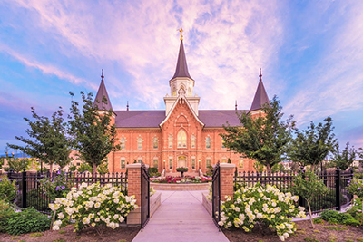
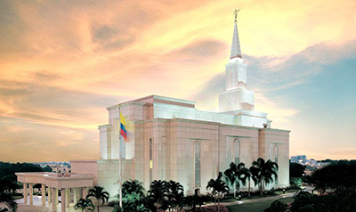
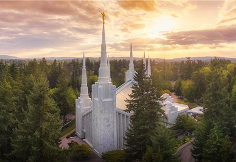
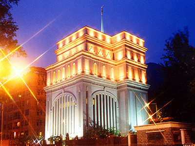

Temples
Provo City Center
History:
The Provo City Center Temple was built in the location of the historic Provo Tabernacle, which was destroyed by a fire in December 2010. The Church preserved the remaining outer walls and built a new foundation and interior. The temple was dedicated on March 20, 2016.
Address:
50 South University Ave
Provo UT 84601
United States
Phone:
(801)-343-2700
Services:
Clothing rental available
No cafeteria available
No patron housing available
Distribution center nearby
Temple Closures:
2019:
Tuesday, 24 December - Wednesday, 25 December
Tuesday, 31 December
2020:
Wednesday, 1 January
Saturday, 4 April
Monday, 22 June - Monday, 6 July
Friday, 24 July
Saturday, 3 October
Wednesday, 25 November (Limited Hours)
Thursday, 26 November
Monday, 30 November - Monday, 14 December
Thursday, 24 December - Friday, 25 December
Thursday, 31 December - Friday, 1 January 2021
Guayaquil
History:
The Guayaquil Ecuador Temple was the first temple built in Ecuador. It was dedicated on August 1, 1999. The temple, labeled "the most beautiful building in Ecuador" by members and nonmembers alike, stands majestically in a peaceful hillside setting in northern Guayaquil.
Address:
6ta y Av. Rodrigo Chavez
Principado de las Lomas
Templo de Guayaquil, Urdesa Norte, — Guayaquil, Ecuador
Phone:
(593) 4-371-8100
Services:
Clothing rental available
Cafeteria available
Patron housing available
Distribution center nearby
Temple Closures:
2019:
Tuesday, 24 December (Limited Hours)
Wednesday, 25 December (Limited Hours)
2020:
Wednesday, 1 January
Tuesday, 25 February (Limited Hours)
Monday, 2 March - Monday, 16 March
Saturday, 4 April (Limited Hours)
Monday, 14 September - Monday, 28 September
Saturday, 3 October (Limited Hours)
Thursday, 24 December (Limited Hours)
Friday, 25 December (Limited Hours)
Portland
History:
The Portland Temple was the first temple in Oregon. It has six spires that elegantly rise from the Douglas fir forest surrounding it, providing a beautiful view from Oregon’s I-5 Interstate. The temple was dedicated on August 21, 1989.
Address:
13600 Kruse Oaks Blvd
Lake Oswego OR 97035-8602
Phone:
(503)-639-7066
Services:
Clothing rental available
Cafeteria available
No patron housing available
Distribution center nearby
Temple Closures:
2019:
Tuesday, 24 December
Wednesday, 25 December
Tuesday, 31 December (Limited Hours)
2020:
Wednesday, 1 January
Monday, 3 February - Monday, 24 February
Saturday, 4 April
Saturday, 4 July
Monday, 20 July - Monday, 10 August
Saturday, 3 October
Wednesday, 25 November (Limited Hours)
Thursday, 26 November
Thursday, 24 December
Friday, 25 December
Thursday, 31 December
Hong Kong
Address:
2 Cornwall St
Kowloon Tong
Kowloon City, Hong Kong
Phone:
(+852) 2339-8100
Services:
Clothing rental available
No cafeteria available
Patron housing available
Distribution center nearby
Temple Closures:
The temple is currently closed for renovation.